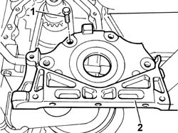
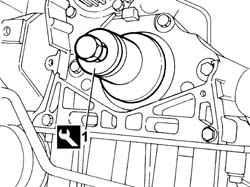
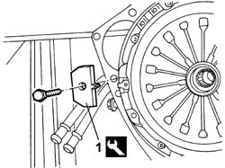
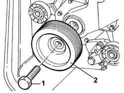
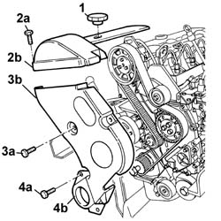
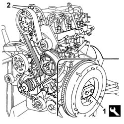
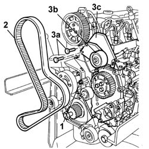
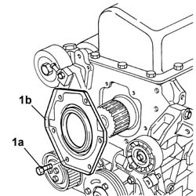
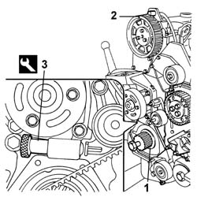
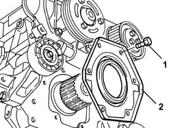

1020D13 FRONT CRANKSHAFT OIL SEAL COVER- R+R AND REPLACE GASKETS FOR VERSIONS WITH AIR CONDITIONER
- Path
- Procedures > 10 ENGINE UNIT > 1020 CRANKCASE SUMP AND COVERS > 1020D OIL SEALS ON CRANK SHAFT > 1020D13 FRONT CRANKSHAFT OIL SEAL COVER- R+R AND REPLACE GASKETS FOR VERSIONS WITH AIR CONDITIONER
- Kind
- repair procedure (removal / refitting; the operation number is the code)
- Applies to
- engines: 2.0 16V, 2.8 JTD 8V; all production periods
- Interactive page
- https://sloeber94.github.io/elrnDB-fDct/en/#/244000665
Applies to: engines: 2.0 16V; all production periods
 Removing
Removing
 Refitting
RefittingOp. 7055B54 UNDER-ENGINE GUARD - R R
Op. 1092C11 POWER STEERING PUMP DRIVE BELT - R R FOR VERSIONS WITH AIR CONDITIONER
Op. 1092B40 AIR CONDITIONER COMPRESSOR/ALTERNATOR DRIVE BELT - R + R
See in Op. 1092A12
See in Op. 1032D12
See in Op. 1032B14
See in Op. 1032B44
See in Op. 1032B47
Op. 1024B54 ENGINE FLYWHEEL PROTECTION R R
See in Op. 1092G15
Op. 5530A14 ALTERNATOR - R+R FOR VERSIONS WITH AIR CONDITIONER
Op. 5530A40 ALTERNATOR BRACKETS/MOUNT/SPACER - R R
1. Undo the bolts securing the front crankshaft oil seal cover.
2. Remove the front crankshaft oil seal cover from its seat.

Applies to: engines: 2.0 16V; all production periods
Refitting
Removing- Remove the oil sealing ring from its seat on the front cover.
- Apply sealant to the front cover.
 | Description | Qty. | Component | Type | Classification |
|---|---|---|---|---|---|
. | DOW CORNING 7091 | - | FRONT COVER CRANKSHAFT | Silicone sealant | - |
- Fit the cover and tighten the bolts to the recommended torque.
1. Fit the seal using the tool.
 | Description | Code | Function |
|---|---|---|---|
. | Fitting tool | 1.860.855.000 | Fitting crankshaft front oil seal |

Applies to: engines: 2.0 16V; all production periods
Op. 5530A40 ALTERNATOR BRACKETS/MOUNT/SPACER - R R
Op. 5530A14 ALTERNATOR - R+R FOR VERSIONS WITH AIR CONDITIONER
See in Op. 1092G15
Op. 1024B54 ENGINE FLYWHEEL PROTECTION R R
See in Op. 1032B47
See in Op. 1032B44
See in Op. 1032B14
See in Op. 1032D12
See in Op. 1092A12
Op. 1092B40 AIR CONDITIONER COMPRESSOR/ALTERNATOR DRIVE BELT - R + R
Op. 1092C11 POWER STEERING PUMP DRIVE BELT - R R FOR VERSIONS WITH AIR CONDITIONER
Applies to: all engines; all production periods
Removing
Refitting1. Fit the tool.
| Description | Code | Function |
|---|---|---|---|
1 | Counter-torque | 1.860.741.000 | Tool for preventing crankshaft rotation |

Applies to: all engines; all production periods
1. Undo the centre fixing bolt.
2. Remove the engine components drive pulley.
- Remove the tool.
| Description | Code | Function |
|---|---|---|---|
. | Counter-torque | 1.860.741.000 | Tool for preventing crankshaft rotation |

Applies to: all engines; all production periods
1. Remove the lubricant filler cap.
2. Undo the bolts (2a) and remove the upper timing drive belt cover (2b).
3. Undo the bolts (3a) and remove the intermediate timing drive belt cover (3b).
4. Undo the bolts (4a) and remove the lower timing drive belt cover (4b).

Applies to: all engines; all production periods
1. Fit the tool.
| Description | Code | Function |
|---|---|---|---|
1 | Flange | 1.860.815.000 | Crankshaft rotation |
2. Rotate the crankshaft until the camshaft references are alinged (cylinder no. 1 at T.D.C.).

Applies to: all engines; all production periods
1. Loosen the bolt fixing the belt tensioner.
2. Remove the timing belt.
3. Undo the fixing bolts (3a) and remove the fixed pulley (3b) and the guard (3c) underneath.

Applies to: all engines; all production periods
- Rotate the engine through 180° on the overhaul stand.
1. Undo the bolts (1°) and remove the crankcase front cover (1b) with the oil seal incorporated.

Applies to: all engines; all production periods
Refitting
Removing- Fit the crankcase front cover with the oil seal incorporated and tighten the fixing bolts to the recommended torque.
 | Value - daNm | Fastening | Component | Ø |
|---|---|---|---|---|
. | (engine crankcase side) 2.3 | Bolt | FRONT COVER CRANKSHAFT | M8 |
- Rotate the engine through 180° on the overhaul stand.
1. Check that the reference on the timing gear is in a vertical position.
2. Check that the camshaft references are aligned.
3. Fit the tool.
| Description | Code | Function |
|---|---|---|---|
3 | Calibrated shim | 1.860.638.000 | Timing belt tensioning |

Applies to: all engines; all production periods
1. Fully fit the toothed timing drive belt.
- Remove the tool.
| Description | Code | Function |
|---|---|---|---|
. | Calibrated shim | 1.860.638.000 | Timing belt tensioning |
- Rotate the crankshaft through two revolutions.
- Check once again that the timing references on the crankshaft and the camshaft are aligned.
2. Tighten the belt tensioner nut to the recommended torque.
| Value - daNm | Fastening | Component | Ø |
|---|---|---|---|---|
. | (cylinder head side) 2.5 | Nut | MOBILE TIMING TENSIONER | M8 |

Applies to: all engines; all production periods
- Remove the tool.
| Description | Code | Function |
|---|---|---|---|
. | Flange | 1.860.815.000 | Crankshaft rotation |
- Fit the timing belt covers and secure them using the bolts.
- Fit the oil filler plug.
- Fit the tool.
| Description | Code | Function |
|---|---|---|---|
. | Counter-torque | 1.860.741.000 | Tool for preventing crankshaft rotation |
- Fit the crankshaft pulley and tighten the bolt to the recommended torque.
| Value - daNm | Fastening | Component | Ø |
|---|---|---|---|---|
. | (crankshaft side) 20 | Bolt | CRANKSHAFT PULLEY | M20 |
- Remove the tool.
| Description | Code | Function |
|---|---|---|---|
. | Counter-torque | 1.860.741.000 | Tool for preventing crankshaft rotation |
Applies to: engines: 2.8 JTD 8V; all production periods
Removing
RefittingOp. 7055B54 UNDER-ENGINE GUARD - R R
See in Op. 1008B10
See in Op. 1032D12
See in Op. 1032B14
1. Undo the fixing bolts.
2. Remove the front crankshaft oil seal cover.

Applies to: engines: 2.8 JTD 8V; all production periods
Refitting
Removing- Fit the crankshaft front cover with the oil seal incorporated.
- Tighten to torque.
| Value - daNm | Fastening | Component | Ø |
|---|---|---|---|---|
. | (engine crankcase side) 2.3 | Bolt | FRONT COVER CRANKSHAFT | M8 |
See in Op. 1032B14
See in Op. 1032D12
See in Op. 1008B10
Topics linked from this page (7)
- 1020A26 CRANKCASE SUMP - R R CLEAN MATING SURFACES AND APPLY SEALANT FOR VEHICLE WITH AIR CONDITIONER
- 1024B54 ENGINE FLYWHEEL PROTECTION R R
- 1092B40 AIR CONDITIONER COMPRESSOR/ALTERNATOR DRIVE BELT - R + R
- 1092C11 POWER STEERING PUMP DRIVE BELT - R R FOR VERSIONS WITH AIR CONDITIONER
- 5530A14 ALTERNATOR - R+R FOR VERSIONS WITH AIR CONDITIONER
- 5530A40 ALTERNATOR BRACKETS/MOUNT/SPACER - R R
- 7055B54 UNDER-ENGINE GUARD - R R